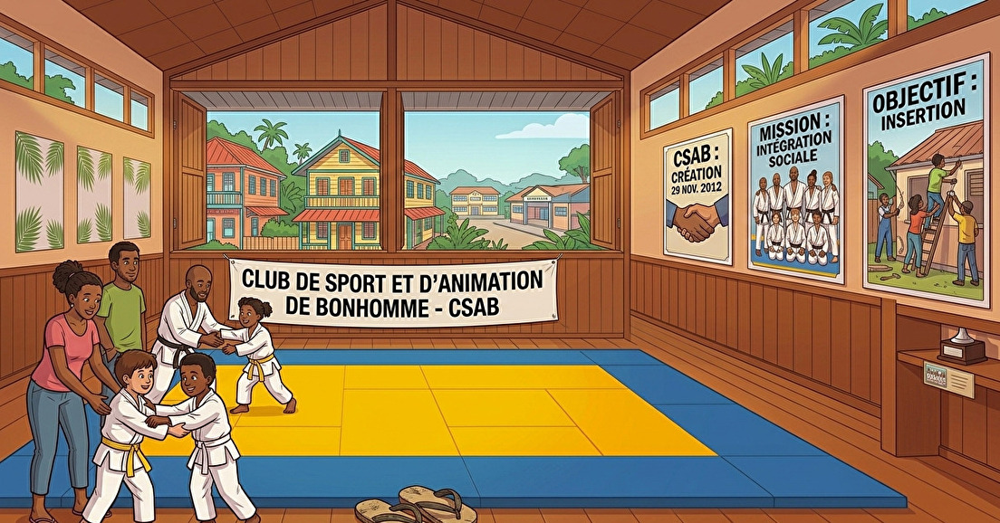
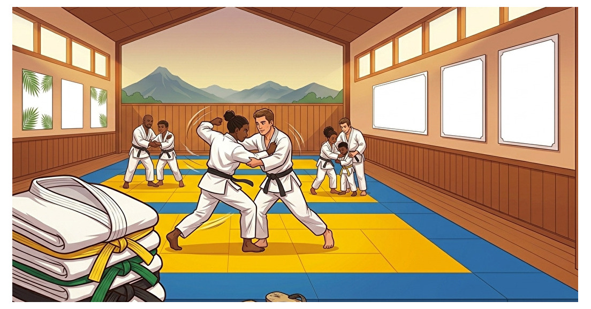

Baby
Judo
Découvrir le tatami, apprendre à bouger et prendre confiance, un premier salut à la fois.
LE JUDO SE VIT. IL SE TRANSMET.
VOLUME 3D · GLISSER / MOLETTE · 360°

01 / L’ESPRIT CSAB
Né le 29 novembre 2012 à Bonhomme, le CSAB fait du sport un lieu de rencontre, de transmission et de confiance.
Les plus expérimentés accompagnent les plus jeunes. Chacun progresse à son rythme, porté par le respect, la discipline et l’esprit sportif.
LA PROGRESSION NE SE MESURE PAS QU’À LA CEINTURE.
02 / TROUVE TA VOIE
Premiers pas, progression ou remise en forme.
Une pratique pour chaque étape de la vie.
Découvrir le tatami, apprendre à bouger et prendre confiance, un premier salut à la fois.
Apprendre, progresser, se dépasser. Des cours pour les enfants, les adolescents et les adultes.
Renforcement musculaire et sport-santé. Une pratique pour entretenir sa forme et partager un moment ensemble.
03 / RENDEZ-VOUS SUR LE TATAMI
Planning 2026–2027.
Choisis ton dojo pour retrouver tes cours.
| Année de naissance / âge | Cours | Jours | Horaires |
|---|
Aucun cours de cette discipline dans ce dojo. Choisis un autre dojo ou affiche tous les cours.
Horaires indicatifs, susceptibles d’être modifiés par le club. Consulter le planning officiel ↗
04 / LA SAISON COMMENCE ICI
Cotisations pour la saison 2026–2027.
Paiement en une fois ou en trois tranches.
320 €/ saison
Pack adhérent inclus
Tarif forfaitaire, non dégressif.
Choisir Baby Judo ↗370 €/ saison
1re inscription du foyer · Pack adhérent inclus
2e : 355 € · 3e : 340 €
Choisir le Judo ↗260 €/ saison
1 séance par semaine
2 séances par semaine : 320 €
Choisir le Taïso ↗Tarifs Judo dégressifs au sein d’un même foyer. Taïso : tarif identique en nouvelle inscription et en renouvellement. Tous les tarifs et options ↗
05 / PLUS LOIN, ENSEMBLE

BIEN PLUS QUE DES ENTRAÎNEMENTS.Des rencontres avec le Suriname et le Brésil pour progresser, découvrir et nouer de nouveaux liens.
Depuis 2024, le Grand Tournoi Féminin rassemble autour de la Journée internationale des droits de la femme.
Remises de récompenses, challenge inter-dojo, sorties pendant les vacances et randonnées Taïso en Guyane.
AVANT LE PREMIER SALUT
Oui. Contacte le club au 0694 41 03 08 pour organiser un cours d’essai.
Ouvre le formulaire d’adhésion du club, renseigne les informations demandées, joins les documents et choisis ton règlement. Pour plusieurs enfants, utilise « Autre adhérent » dans le même formulaire.
Oui, le paiement en trois fois est proposé. Le club accepte la carte bancaire, le virement, le chèque et les espèces.
Prépare tes coordonnées et les pièces de santé et autorisations demandées dans le formulaire officiel. Pour les modalités exactes, consulte la FAQ du club ou contacte l’équipe.
LE PROCHAIN CHAPITRE S’ÉCRIT AVEC TOI.